library(tidyverse)
library(ggplot2)
library(here)
library(knitr)
library(scales)
library(patchwork)20 Gráficos científicos
Objetivos de aprendizaje
Al finalizar este capítulo, el lector será capaz de:
- Comprender los principios fundamentales de la comunicación visual científica.
- Diferenciar entre gráficos exploratorios y gráficos destinados a publicación.
- Aplicar criterios de diseño orientados a la claridad y reproducibilidad.
- Utilizar temas y escalas apropiadas para artículos científicos, tesis e informes técnicos.
- Construir gráficos científicamente sólidos utilizando
ggplot2. - Reconocer errores frecuentes en la comunicación visual de resultados.
20.1 Introducción
La visualización constituye una de las etapas más importantes del análisis estadístico. Un gráfico bien diseñado puede comunicar en segundos patrones que requerirían varias páginas de texto para ser explicados. Sin embargo, no todos los gráficos cumplen el mismo propósito.
Durante las primeras etapas de una investigación suelen utilizarse gráficos exploratorios destinados a comprender los datos. En cambio, cuando los resultados se presentan en una tesis, un informe técnico o un artículo científico, los gráficos deben cumplir estándares adicionales de claridad, precisión y reproducibilidad (Healy, 2018; Wilkinson, 2005).
La visualización científica busca maximizar la comunicación de la información minimizando los elementos innecesarios. Este principio fue ampliamente desarrollado por Tufte (Tufte, 2001), quien argumenta que los gráficos deben enfatizar los datos y reducir los componentes decorativos que no aportan significado analítico.
En este capítulo utilizaremos la base analítica construida a partir de la Encuesta de Superficie y Producción Agropecuaria Continua (ESPAC 2025) para ilustrar los principios de diseño gráfico científico.
20.2 Cargando paquetes
20.3 Cargando la base analítica
base_analitica <- readRDS(
here::here(
"datos",
"procesado",
"ESPAC_2025",
"sunac_transformado.rds"
)
)20.4 Preparando variables para visualización
Tal como se observó en el capítulo anterior, la variable supertotal presenta una distribución altamente asimétrica. Por esta razón construiremos una transformación logarítmica que facilite la visualización.
base_analitica <- base_analitica |>
mutate(
log_supertotal =
log1p(
supertotal
)
)20.5 ¿Qué diferencia un gráfico exploratorio de un gráfico científico?
Los gráficos exploratorios se utilizan durante el análisis para comprender los datos.
Los gráficos científicos tienen un propósito diferente:
- Comunicar resultados.
- Facilitar la interpretación.
- Reducir ambigüedades.
- Mantener consistencia visual.
- Garantizar reproducibilidad.
- Cumplir estándares editoriales.
La siguiente tabla resume las diferencias principales.
comparacion_graficos <- tibble(
Caracteristica = c(
"Objetivo",
"Audiencia",
"Diseño",
"Nivel de detalle",
"Uso principal"
),
Exploratorio = c(
"Descubrir patrones",
"Investigador",
"Flexible",
"Alto",
"Análisis"
),
Cientifico = c(
"Comunicar evidencia",
"Lectores",
"Estandarizado",
"Controlado",
"Publicación"
)
)
comparacion_graficos |>
kable(
caption = "Comparación entre gráficos exploratorios y científicos"
)| Caracteristica | Exploratorio | Cientifico |
|---|---|---|
| Objetivo | Descubrir patrones | Comunicar evidencia |
| Audiencia | Investigador | Lectores |
| Diseño | Flexible | Estandarizado |
| Nivel de detalle | Alto | Controlado |
| Uso principal | Análisis | Publicación |
Interpretación
Los gráficos científicos no sustituyen al análisis exploratorio. Ambos cumplen funciones complementarias dentro del proceso de investigación.
20.6 El principio de la tinta de datos
Tufte (Tufte, 2001) propone que la mayor parte de la tinta utilizada en un gráfico debe estar dedicada a representar información relevante.
Esto implica:
- Reducir adornos innecesarios.
- Eliminar fondos excesivos.
- Evitar efectos tridimensionales.
- Simplificar rejillas.
- Destacar los datos.
20.7 Ejemplo de gráfico básico
Comenzaremos con un histograma sencillo.
ggplot(
base_analitica,
aes(
x = log_supertotal
)
) +
geom_histogram(
bins = 30
)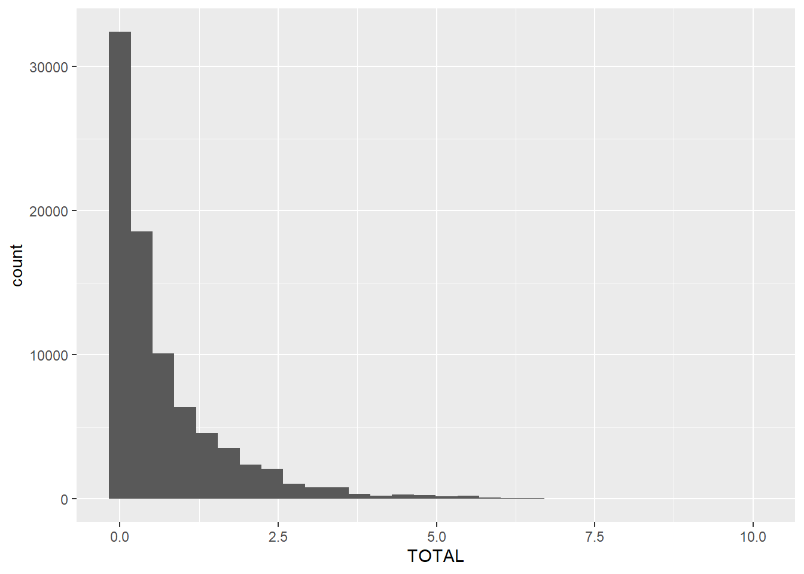
Interpretación
Aunque el gráfico comunica la distribución de la variable, todavía puede mejorarse desde el punto de vista científico.
20.8 Mejorando la presentación
ggplot(
base_analitica,
aes(
x = log_supertotal
)
) +
geom_histogram(
bins = 30,
fill = "steelblue",
color = "white"
) +
theme_minimal() +
labs(
x = "Logaritmo de la superficie total",
y = "Frecuencia"
)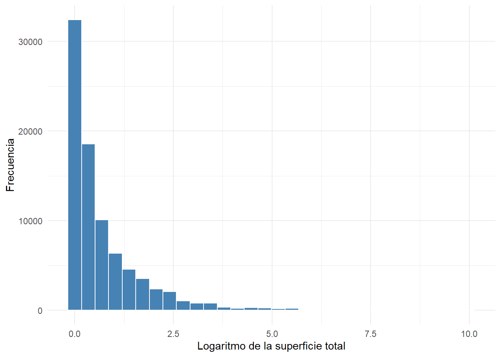
Interpretación
La versión mejorada reduce el ruido visual y facilita la lectura del gráfico.
20.9 Temas en ggplot2
Los temas controlan la apariencia general de los gráficos.
Algunos de los más utilizados son:
temas_ggplot <- tibble(
Tema = c(
"theme_gray()",
"theme_bw()",
"theme_classic()",
"theme_light()",
"theme_minimal()"
),
Uso = c(
"Predeterminado",
"Artículos",
"Publicaciones",
"Informes",
"Visualización moderna"
)
)
temas_ggplot |>
kable(
caption = "Temas comunes en ggplot2"
)| Tema | Uso |
|---|---|
| theme_gray() | Predeterminado |
| theme_bw() | Artículos |
| theme_classic() | Publicaciones |
| theme_light() | Informes |
| theme_minimal() | Visualización moderna |
Interpretación
No existe un único tema correcto. La elección depende del contexto de publicación y de los requisitos editoriales.
20.10 Comparación de temas
20.10.1 Tema clásico
ggplot(
base_analitica,
aes(
x = log_supertotal
)
) +
geom_histogram(
bins = 30,
fill = "steelblue"
) +
theme_classic()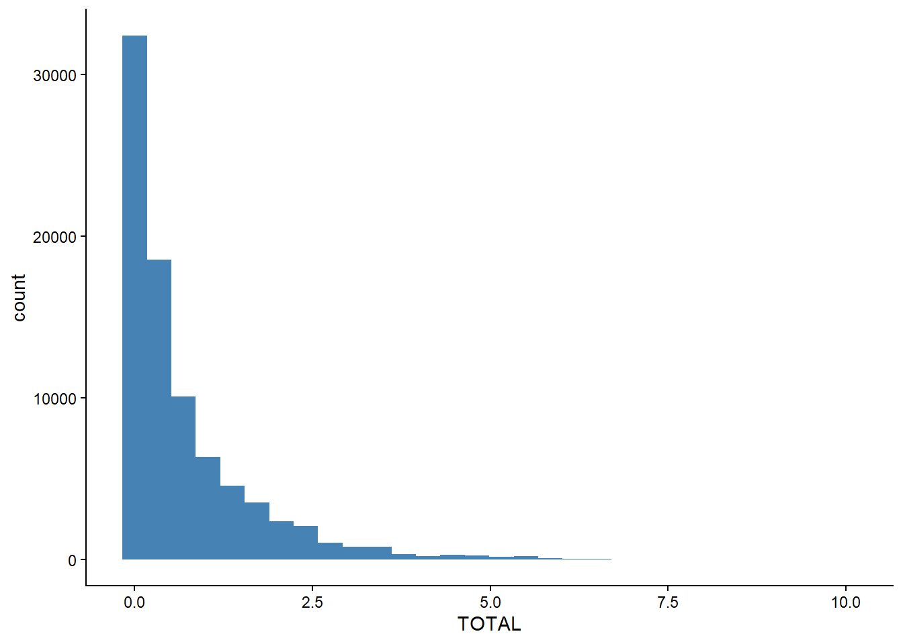
20.10.2 Tema minimalista
ggplot(
base_analitica,
aes(
x = log_supertotal
)
) +
geom_histogram(
bins = 30,
fill = "steelblue"
) +
theme_minimal()Interpretación
Ambos gráficos contienen exactamente la misma información. La diferencia radica únicamente en la forma de presentación.
20.11 El uso científico del color
El color debe utilizarse para comunicar información y no solamente para decorar.
Un uso adecuado del color permite:
- Diferenciar categorías.
- Resaltar patrones.
- Facilitar comparaciones.
- Mejorar accesibilidad.
20.12 Paletas perceptualmente uniformes
Las paletas Viridis fueron diseñadas específicamente para visualización científica (Garnier, 2024).
Sus ventajas incluyen:
- Compatibilidad con impresión.
- Compatibilidad con escalas de grises.
- Legibilidad para personas con daltonismo.
- Gradientes perceptualmente uniformes.
20.13 Ejemplo utilizando Viridis
ggplot(
base_analitica,
aes(
x = tamano_upa,
fill = tamano_upa
)
) +
geom_bar() +
scale_fill_viridis_d() +
theme_minimal() +
labs(
x = "Tamaño de UPA",
y = "Frecuencia",
fill = "Tamaño"
)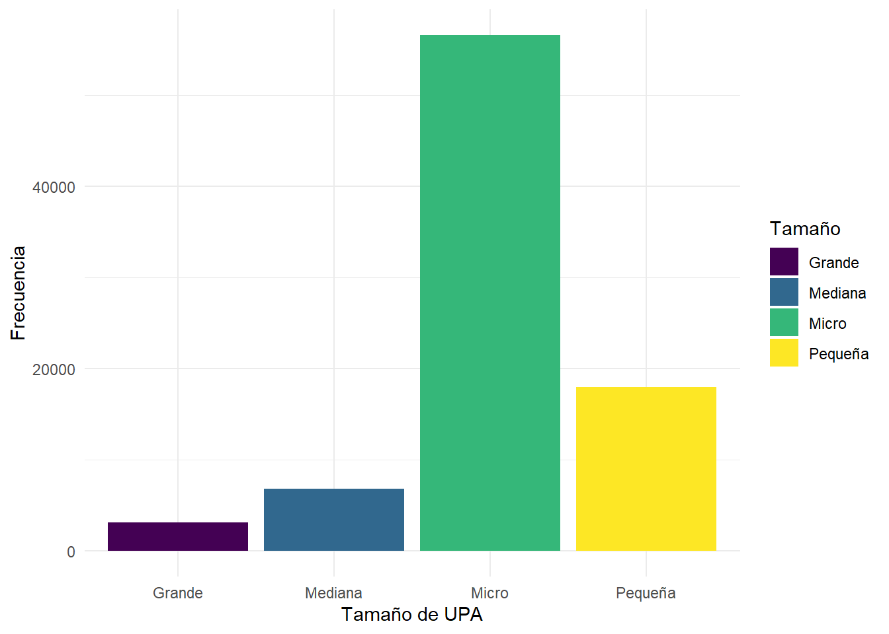
Interpretación
La paleta mantiene contraste adecuado entre categorías y conserva una apariencia profesional.
20.14 Evitando gráficos engañosos
Los gráficos pueden inducir interpretaciones erróneas cuando:
- Se modifican escalas de manera inapropiada.
- Se utilizan ejes truncados sin justificación.
- Se exageran diferencias pequeñas.
- Se utilizan efectos tridimensionales.
La comunicación científica exige representar los datos de forma honesta y transparente (Cairo, 2016).
20.15 Ejemplo de mala práctica
datos_ejemplo <- tibble(
grupo = c(
"A",
"B"
),
valor = c(
100,
105
)
)
ggplot(
datos_ejemplo,
aes(
x = grupo,
y = valor
)
) +
geom_col(
fill = "firebrick"
) +
coord_cartesian(
ylim = c(
95,
106
)
) +
theme_minimal()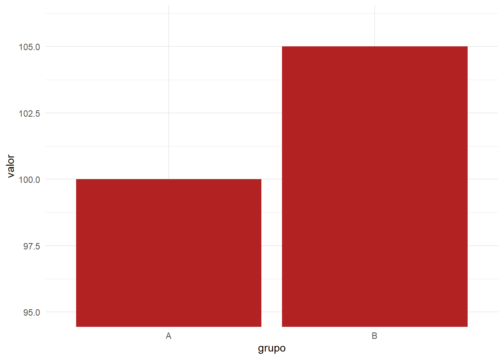
Interpretación
El gráfico exagera visualmente una diferencia relativamente pequeña. Este tipo de prácticas debe evitarse en publicaciones científicas.
20.16 Ejemplo corregido
ggplot(
datos_ejemplo,
aes(
x = grupo,
y = valor
)
) +
geom_col(
fill = "steelblue"
) +
theme_minimal()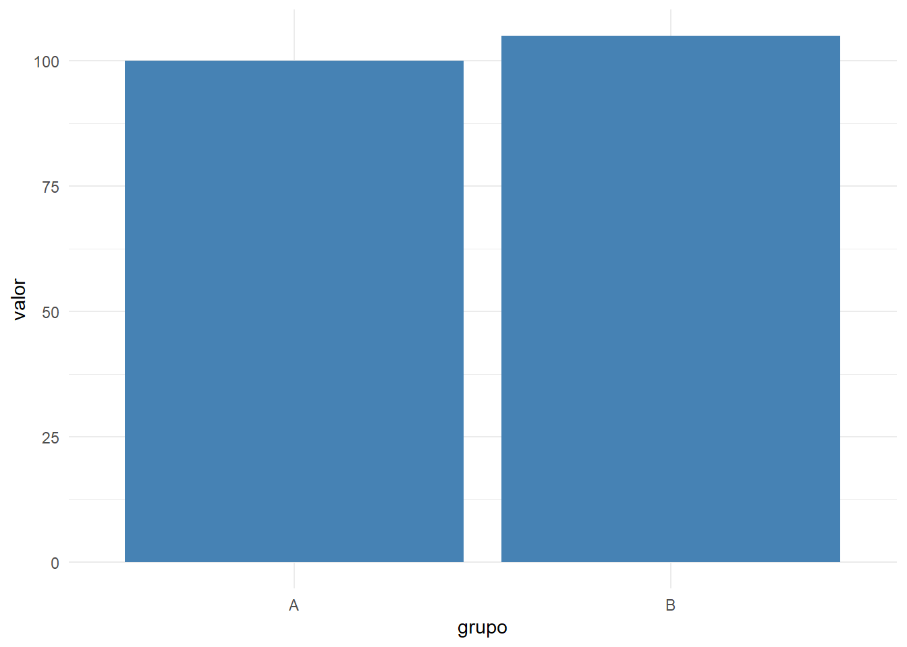
Interpretación
La representación correcta permite apreciar la verdadera magnitud de la diferencia observada.
20.17 Construyendo un estilo gráfico reproducible
Una práctica recomendable consiste en definir un estilo gráfico común para toda la investigación.
tema_cientifico <- theme_minimal() +
theme(
plot.title =
element_text(
face = "bold"
),
axis.title =
element_text(
face = "bold"
),
legend.title =
element_text(
face = "bold"
)
)20.18 Aplicando el tema científico
ggplot(
base_analitica,
aes(
x = log_supertotal
)
) +
geom_histogram(
bins = 30,
fill = "steelblue",
color = "white"
) +
tema_cientifico +
labs(
title = "Distribución de la superficie total transformada",
x = "Logaritmo de la superficie total",
y = "Frecuencia"
)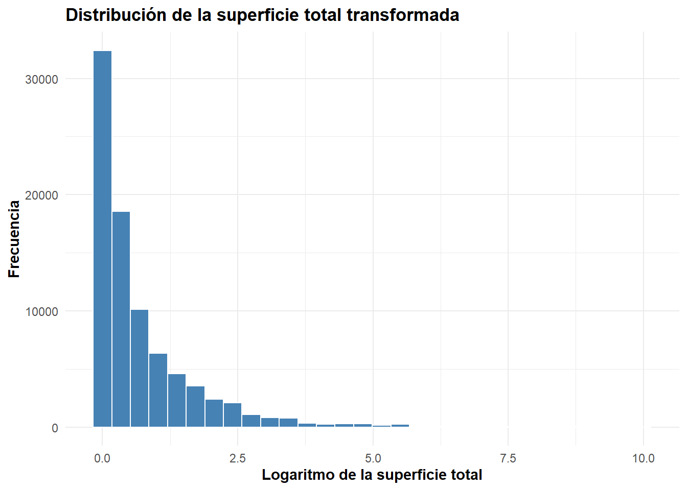
Interpretación
La estandarización visual mejora la consistencia entre figuras y facilita la comunicación de resultados.
20.19 Recomendaciones para publicaciones científicas
Al construir figuras destinadas a publicaciones se recomienda:
- Mantener consistencia visual.
- Utilizar tipografías legibles.
- Evitar colores innecesarios.
- Reducir ruido visual.
- Incluir títulos y etiquetas claras.
- Garantizar reproducibilidad.
- Conservar una misma línea gráfica en todo el documento.
20.20 Manos a la obra
Utilizando la base base_analitica:
- Construya un histograma básico de
log_supertotal. - Mejore el gráfico utilizando
theme_minimal(). - Compare distintos temas disponibles en
ggplot2. - Construya un gráfico de barras para
tamano_upa. - Aplique una paleta Viridis.
- Diseñe un tema científico personalizado.
- Replique el mismo estilo en al menos tres gráficos diferentes.
- Identifique ejemplos de ruido visual.
- Explique la diferencia entre un gráfico exploratorio y uno científico.
- Justifique la importancia de la reproducibilidad gráfica.
21 Parte 2. Gráficos científicos para tesis, informes y artículos
21.1 Introducción
En la sección anterior aprendimos los principios fundamentales de la comunicación visual científica. Sin embargo, la calidad de una figura no depende únicamente de su apariencia estética. Los gráficos utilizados en tesis, artículos científicos e informes técnicos deben facilitar la interpretación estadística de los resultados y comunicar evidencia de manera clara y precisa (Cairo, 2016; Tufte, 2001).
En esta sección construiremos figuras que suelen encontrarse en publicaciones académicas, incorporando criterios de presentación utilizados habitualmente en revistas científicas.
21.2 Histograma publicable
Comenzaremos construyendo una versión mejorada del histograma de superficie transformada.
ggplot(
base_analitica,
aes(
x = log_supertotal
)
) +
geom_histogram(
bins = 35,
fill = "#2C7FB8",
color = "white"
) +
tema_cientifico +
labs(
title = "Distribución de la superficie total",
subtitle = "Variable transformada mediante logaritmo natural",
x = "Logaritmo de la superficie total",
y = "Frecuencia"
)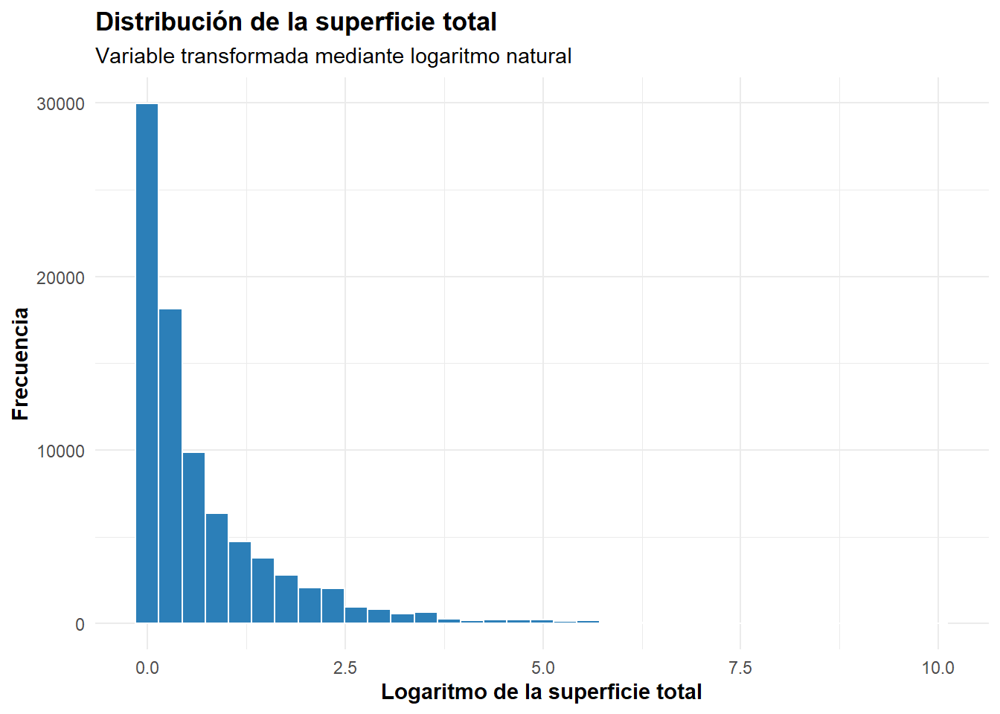
Interpretación
La transformación logarítmica mejora significativamente la capacidad de visualizar la distribución de la superficie agrícola, reduciendo la influencia de observaciones extremadamente grandes.
21.3 Histograma con densidad
En muchas publicaciones científicas se recomienda complementar el histograma con una curva de densidad.
ggplot(
base_analitica,
aes(
x = log_supertotal
)
) +
geom_histogram(
aes(
y = after_stat(density)
),
bins = 35,
fill = "gray80",
color = "white"
) +
geom_density(
linewidth = 1,
color = "#08519C"
) +
tema_cientifico +
labs(
x = "Logaritmo de la superficie total",
y = "Densidad"
)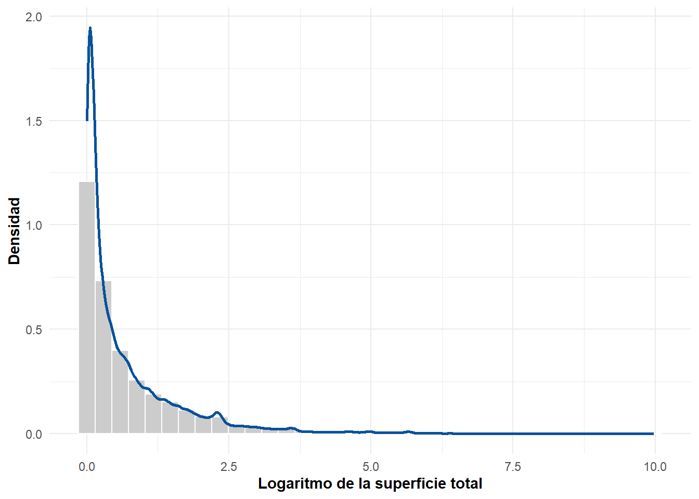
Interpretación
La curva de densidad permite identificar de forma más clara la forma general de la distribución y posibles concentraciones de observaciones.
21.4 Comparaciones mediante diagramas de caja
Los diagramas de caja constituyen una de las herramientas más utilizadas para comparar distribuciones entre grupos.
ggplot(
base_analitica,
aes(
x = tamano_upa,
y = log_supertotal,
fill = tamano_upa
)
) +
geom_boxplot(
alpha = 0.8
) +
scale_fill_viridis_d() +
tema_cientifico +
labs(
x = "Tamaño de UPA",
y = "Logaritmo de la superficie total",
fill = "Tamaño"
)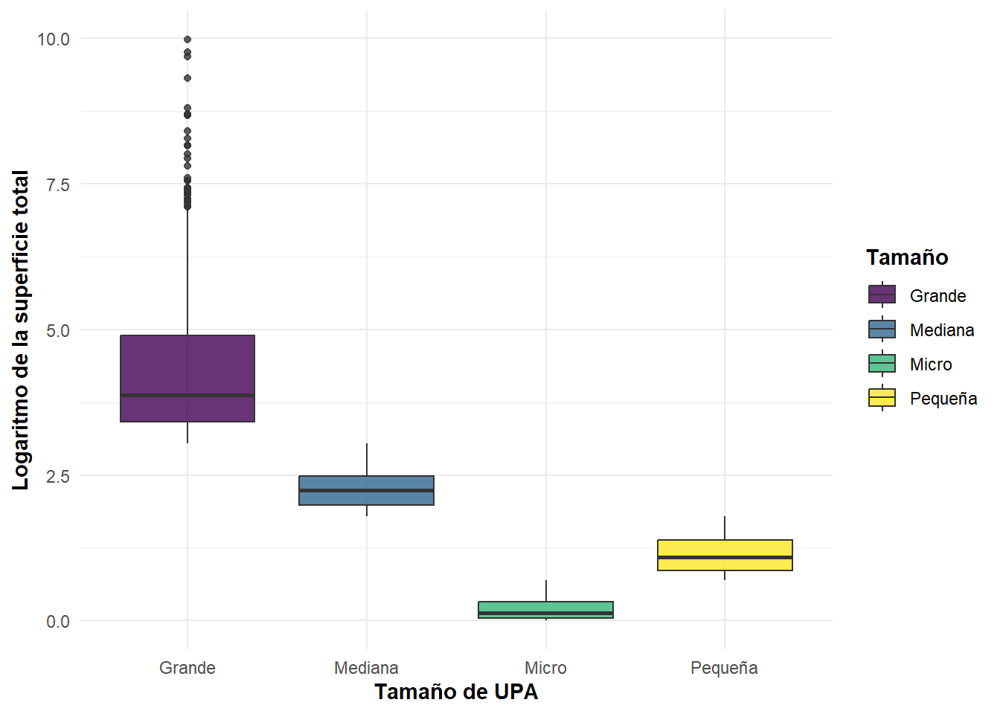
Interpretación
Las diferencias observadas entre cajas sugieren heterogeneidad en la distribución de la superficie según el tamaño de la unidad productiva.
21.5 Gráficos de violín
Los gráficos de violín combinan características de los diagramas de caja y de las curvas de densidad.
ggplot(
base_analitica,
aes(
x = tamano_upa,
y = log_supertotal,
fill = tamano_upa
)
) +
geom_violin(
alpha = 0.8
) +
scale_fill_viridis_d() +
tema_cientifico +
labs(
x = "Tamaño de UPA",
y = "Logaritmo de la superficie total"
)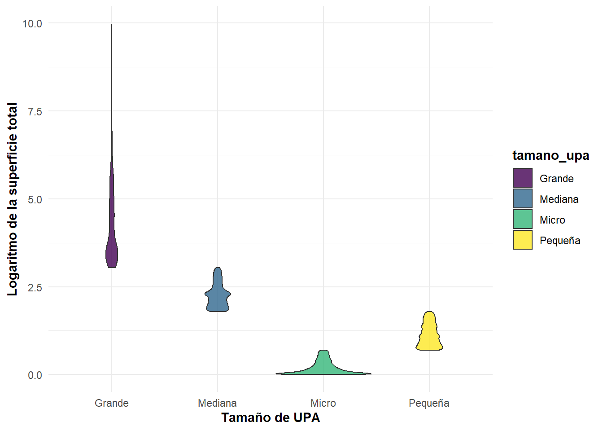
Interpretación
La anchura de cada violín representa la concentración relativa de observaciones en distintos niveles de la variable.
21.6 Barras con intervalos de confianza
Los artículos científicos suelen presentar estimaciones acompañadas por medidas de incertidumbre.
Primero calcularemos la superficie promedio por categoría.
resumen_tamano <- base_analitica |>
group_by(
tamano_upa
) |>
summarise(
media =
mean(
log_supertotal,
na.rm = TRUE
),
sd =
sd(
log_supertotal,
na.rm = TRUE
),
n =
n(),
se =
sd / sqrt(n),
li =
media - 1.96 * se,
ls =
media + 1.96 * se,
.groups = "drop"
)
resumen_tamano |>
kable(
digits = 3,
caption = "Estadísticos descriptivos por tamaño de UPA"
)| tamano_upa | media | sd | n | se | li | ls |
|---|---|---|---|---|---|---|
| Grande | 4.210 | 1.011 | 3106 | 0.018 | 4.174 | 4.245 |
| Mediana | 2.270 | 0.335 | 6846 | 0.004 | 2.262 | 2.278 |
| Micro | 0.200 | 0.190 | 56572 | 0.001 | 0.199 | 0.202 |
| Pequeña | 1.137 | 0.314 | 18014 | 0.002 | 1.132 | 1.142 |
Interpretación
La tabla resume medias, errores estándar e intervalos de confianza aproximados para cada categoría.
21.7 Barras con intervalos
ggplot(
resumen_tamano,
aes(
x = tamano_upa,
y = media
)
) +
geom_col(
fill = "#2C7FB8"
) +
geom_errorbar(
aes(
ymin = li,
ymax = ls
),
width = 0.15
) +
tema_cientifico +
labs(
x = "Tamaño de UPA",
y = "Media de log_supertotal"
)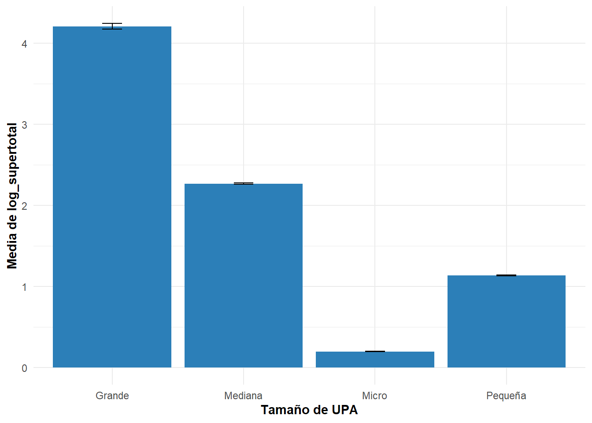
Interpretación
Los intervalos de confianza proporcionan información sobre la incertidumbre asociada a las estimaciones promedio.
21.8 Gráficos de dispersión para publicaciones
Los gráficos de dispersión suelen utilizarse para explorar asociaciones entre variables cuantitativas.
ggplot(
base_analitica,
aes(
x = log_supertotal,
y = fact_exp_fin
)
) +
geom_point(
alpha = 0.25,
color = "#2C7FB8"
) +
geom_smooth(
method = "lm",
color = "#D95F0E",
linewidth = 1
) +
tema_cientifico +
labs(
x = "Logaritmo de la superficie total",
y = "Factor de expansión"
)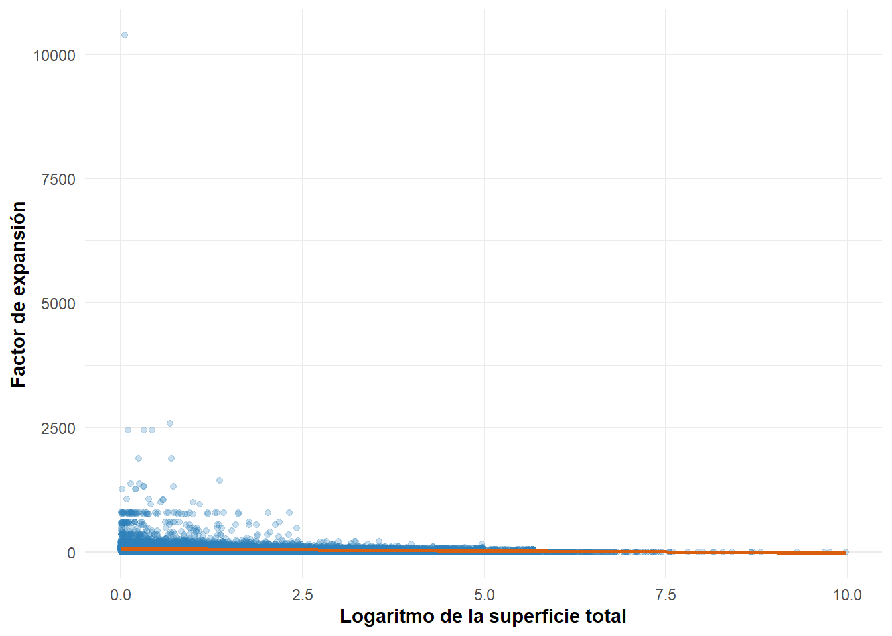
Interpretación
La línea ajustada permite visualizar la tendencia promedio observada entre ambas variables.
21.9 Facetas científicas
Las facetas permiten dividir la información en paneles comparables.
ggplot(
base_analitica,
aes(
x = log_supertotal
)
) +
geom_histogram(
bins = 20,
fill = "#2C7FB8",
color = "white"
) +
facet_wrap(
~ provincia
) +
tema_cientifico +
labs(
x = "Logaritmo de la superficie total",
y = "Frecuencia"
)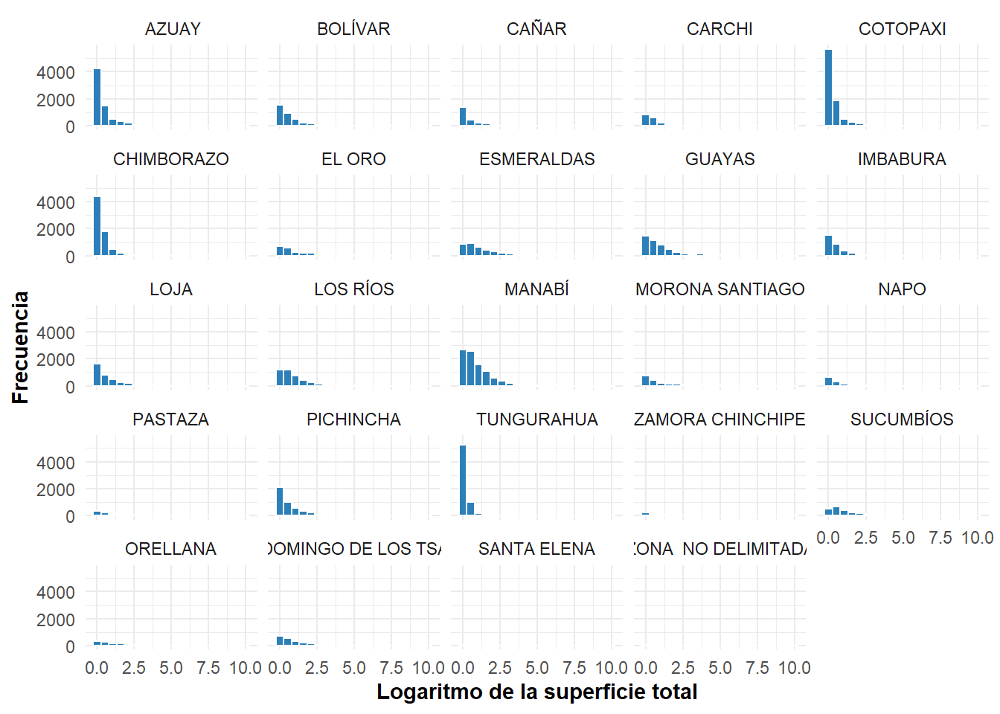
Interpretación
Las facetas permiten comparar distribuciones territoriales manteniendo la misma escala visual.
21.10 Importancia de las etiquetas
Un gráfico científico debe ser comprensible sin necesidad de consultar el texto principal.
Las etiquetas deben:
- Describir claramente las variables.
- Utilizar unidades cuando corresponda.
- Evitar abreviaturas ambiguas.
- Mantener consistencia terminológica.
21.11 Ejemplo de etiquetado profesional
ggplot(
base_analitica,
aes(
x = log_supertotal
)
) +
geom_histogram(
bins = 30,
fill = "#2C7FB8",
color = "white"
) +
tema_cientifico +
labs(
title = "Distribución de la superficie agrícola",
subtitle = "ESPAC 2025",
x = "Logaritmo natural de la superficie total (ha)",
y = "Número de observaciones",
caption = "Fuente: ESPAC 2025"
)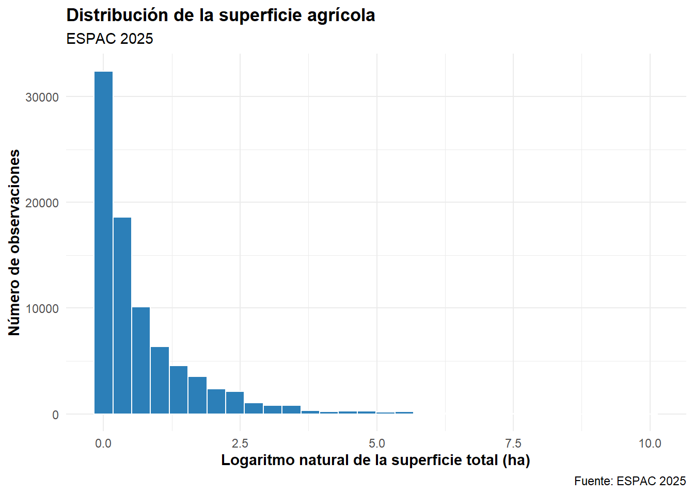
Interpretación
Los títulos, subtítulos y etiquetas ayudan al lector a comprender el contenido de la figura sin necesidad de información adicional.
21.12 Escalas y formatos numéricos
Los gráficos científicos deben utilizar formatos numéricos consistentes.
ggplot(
resumen_tamano,
aes(
x = tamano_upa,
y = media
)
) +
geom_col(
fill = "#2C7FB8"
) +
scale_y_continuous(
labels = scales::number_format(
accuracy = 0.01
)
) +
tema_cientifico +
labs(
x = "Tamaño de UPA",
y = "Media"
)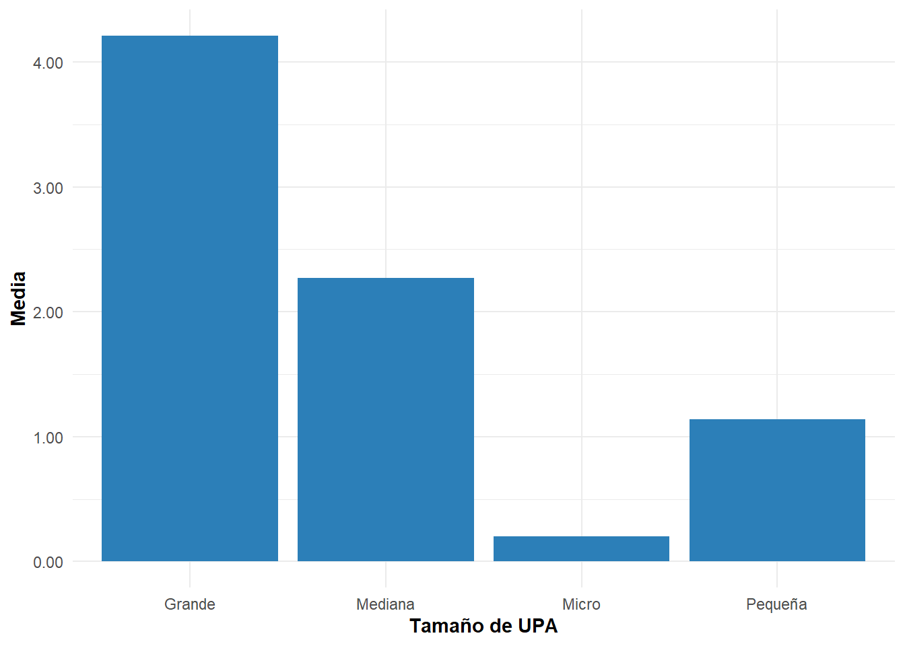
Interpretación
La estandarización de escalas mejora la consistencia visual y facilita comparaciones entre figuras.
21.13 Leyendas y consistencia gráfica
Las leyendas deben mantenerse simples y claras.
Se recomienda:
- Utilizar el mismo esquema de colores en todo el documento.
- Mantener la misma tipografía.
- Evitar leyendas redundantes.
- Utilizar títulos descriptivos.
21.14 Recomendaciones para tesis y artículos
Al preparar figuras para publicaciones se recomienda:
- Utilizar resoluciones altas.
- Mantener consistencia visual.
- Evitar exceso de colores.
- Utilizar escalas apropiadas.
- Revisar accesibilidad.
- Exportar figuras reproduciblemente.
- Documentar completamente el código utilizado.
21.15 Manos a la obra
Utilizando la base base_analitica:
- Construya un histograma publicable.
- Añada una curva de densidad.
- Elabore un diagrama de caja por tamaño de UPA.
- Construya un gráfico de violín.
- Calcule medias e intervalos de confianza.
- Genere un gráfico de barras con intervalos.
- Construya un gráfico de dispersión con línea de tendencia.
- Utilice facetas para comparar provincias.
- Mejore el etiquetado de una figura.
- Evalúe cuáles figuras serían apropiadas para una tesis.
22 Parte 3. Figuras avanzadas para publicaciones científicas
22.1 Introducción
Los artículos científicos, tesis doctorales, informes técnicos y documentos institucionales suelen requerir figuras más complejas que las utilizadas durante el análisis exploratorio. En estos contextos, no basta con construir gráficos individuales; es necesario diseñar figuras coherentes, comparables y reproducibles que comuniquen múltiples resultados de manera integrada (Tufte, 2001; Wilkinson, 2005).
En esta sección aprenderemos a construir figuras multipanel, preparar gráficos para revistas científicas y exportar resultados utilizando estándares reproducibles.
22.2 ¿Qué es una figura científica avanzada?
Una figura científica avanzada suele presentar:
- Varias visualizaciones relacionadas.
- Una narrativa gráfica coherente.
- Comparaciones simultáneas.
- Escalas consistentes.
- Diseño uniforme.
- Preparación para publicación.
La Figura compuesta es uno de los formatos más utilizados en artículos científicos.
22.3 Construyendo una colección de gráficos
Primero construiremos varios gráficos que posteriormente integraremos en una figura compuesta.
22.3.1 Distribución de superficie
grafico_histograma <-
ggplot(
base_analitica,
aes(
x = log_supertotal
)
) +
geom_histogram(
bins = 30,
fill = "#2C7FB8",
color = "white"
) +
tema_cientifico +
labs(
title = "Distribución"
)
grafico_histograma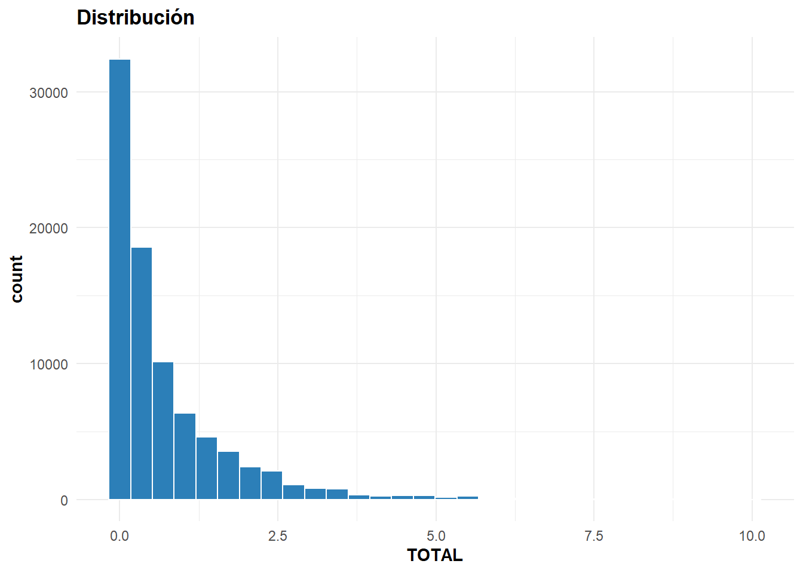
Interpretación
Este gráfico resume la distribución de la superficie agrícola transformada.
22.3.2 Comparación por tamaño de UPA
grafico_boxplot <-
ggplot(
base_analitica,
aes(
x = tamano_upa,
y = log_supertotal,
fill = tamano_upa
)
) +
geom_boxplot() +
scale_fill_viridis_d() +
tema_cientifico +
theme(
legend.position = "none"
) +
labs(
title = "Comparación entre grupos",
x = NULL
)
grafico_boxplot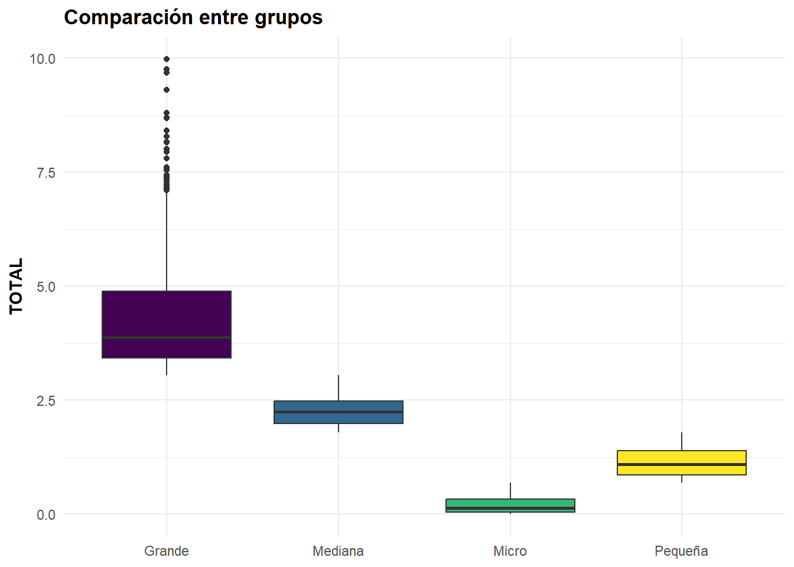
Interpretación
El gráfico permite comparar la distribución de la superficie entre categorías de tamaño.
22.3.3 Relación entre variables
grafico_dispersion <-
ggplot(
base_analitica,
aes(
x = log_supertotal,
y = fact_exp_fin
)
) +
geom_point(
alpha = 0.20,
color = "#2C7FB8"
) +
geom_smooth(
method = "lm",
color = "#D95F0E"
) +
tema_cientifico +
labs(
title = "Relación entre variables"
)
grafico_dispersion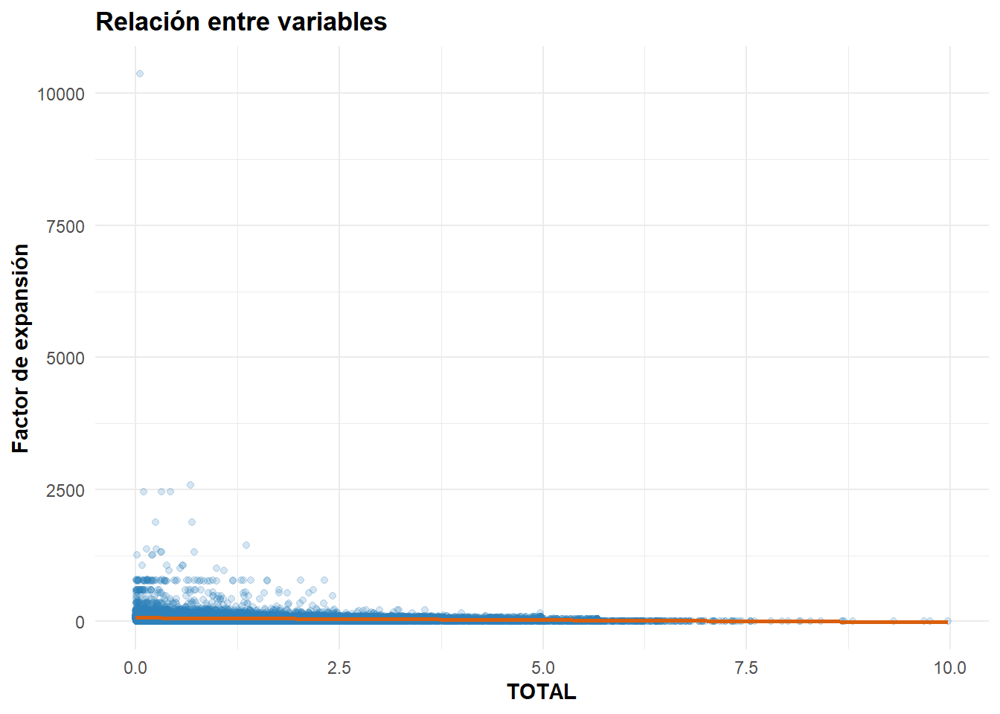
Interpretación
La figura resume visualmente la asociación observada entre ambas variables.
22.4 Figuras multipanel
Los artículos científicos suelen combinar múltiples gráficos dentro de una misma figura.
Para ello utilizaremos el paquete patchwork.
library(patchwork)22.5 Construcción de una figura compuesta
(
grafico_histograma +
grafico_boxplot
) /
(
grafico_dispersion
)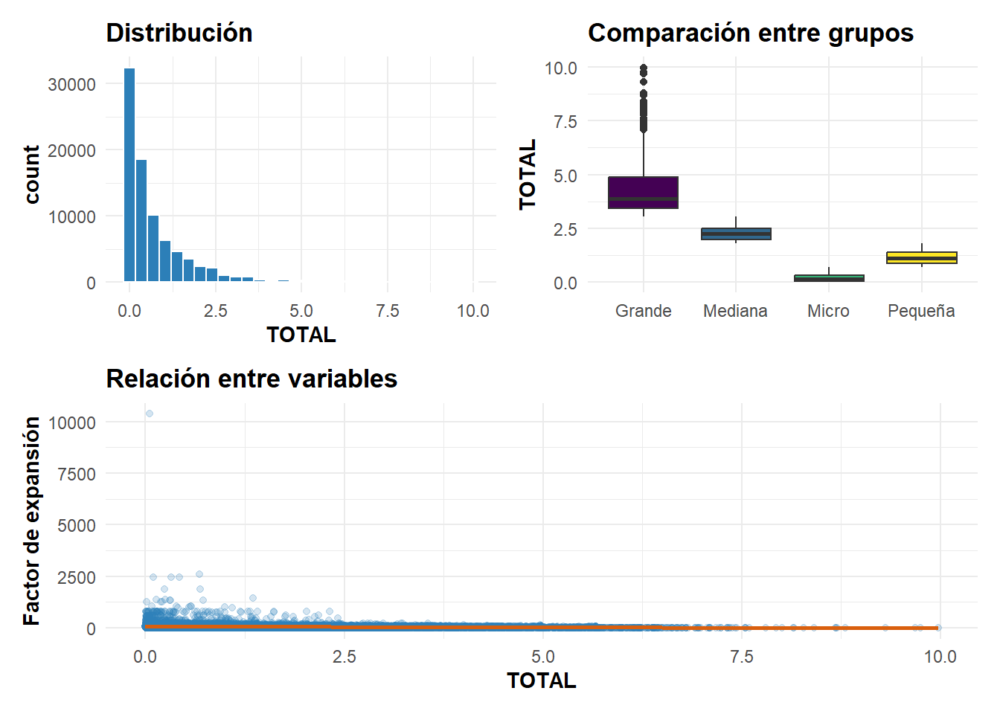
Interpretación
La figura integra diferentes perspectivas del mismo fenómeno, facilitando la comparación visual y reduciendo el número de imágenes necesarias en un artículo.
22.6 Organización visual de paneles
Las figuras multipanel permiten:
- Reducir espacio.
- Comparar resultados.
- Mostrar evidencia complementaria.
- Mejorar la narrativa gráfica.
Este tipo de figuras es particularmente frecuente en revistas indexadas.
22.7 Etiquetado automático de paneles
Muchas revistas solicitan identificar paneles mediante letras.
(
grafico_histograma +
grafico_boxplot +
grafico_dispersion
) +
plot_annotation(
tag_levels = "A"
)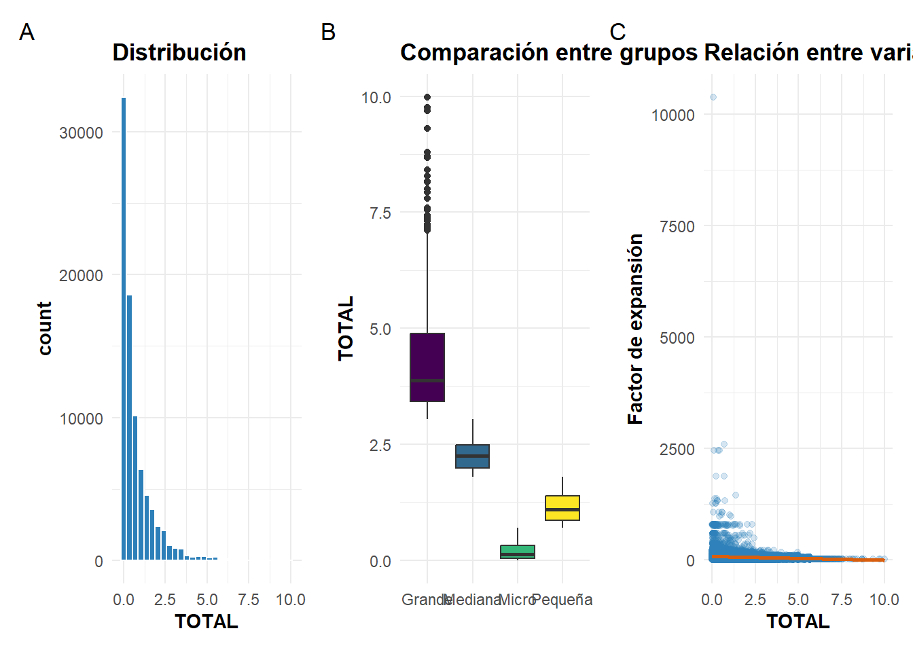
Interpretación
Las etiquetas facilitan la referencia cruzada dentro del texto del artículo.
22.8 Tamaño de figuras para publicación
Las revistas científicas suelen especificar dimensiones máximas para las figuras.
La siguiente tabla resume tamaños habituales.
dimensiones_revistas <- tibble(
Tipo = c(
"Columna simple",
"Media página",
"Página completa"
),
Ancho_cm = c(
8,
12,
17
),
Alto_cm = c(
6,
8,
12
)
)
dimensiones_revistas |>
kable(
caption = "Dimensiones habituales para figuras científicas"
)| Tipo | Ancho_cm | Alto_cm |
|---|---|---|
| Columna simple | 8 | 6 |
| Media página | 12 | 8 |
| Página completa | 17 | 12 |
Interpretación
Las dimensiones pueden variar entre revistas, pero la tabla proporciona valores de referencia útiles.
22.9 Resolución y calidad gráfica
La calidad de una figura depende de:
- Resolución.
- Formato.
- Tamaño físico.
- Legibilidad.
Las revistas científicas suelen solicitar resoluciones entre 300 y 600 dpi (Wilke, 2019).
22.10 Exportación en formato PNG
ggsave(
filename = "figura_publicacion.png",
plot = grafico_dispersion,
width = 16,
height = 10,
units = "cm",
dpi = 300
)22.11 Exportación en formato PDF
ggsave(
filename = "figura_publicacion.pdf",
plot = grafico_dispersion,
width = 16,
height = 10,
units = "cm"
)22.12 Exportación en formato TIFF
Muchas revistas siguen solicitando TIFF para las figuras finales.
ggsave(
filename = "figura_publicacion.tiff",
plot = grafico_dispersion,
width = 16,
height = 10,
units = "cm",
dpi = 600
)22.13 Integración con Quarto
Una ventaja importante de Quarto es que las figuras se generan automáticamente durante el proceso de renderización.
Esto permite:
- Reproducibilidad completa.
- Actualización automática.
- Consistencia visual.
- Menor riesgo de errores.
22.14 Reproducibilidad gráfica
La reproducibilidad implica que cualquier investigador pueda reconstruir exactamente la misma figura utilizando:
- Los mismos datos.
- El mismo código.
- El mismo entorno analítico.
La visualización reproducible constituye un componente esencial de la ciencia abierta (Peng, 2011).
22.15 Lista de verificación para publicaciones
Antes de enviar una figura a una revista científica conviene verificar:
checklist_figuras <- tibble(
Criterio = c(
"Título claro",
"Etiquetas completas",
"Escalas correctas",
"Leyendas legibles",
"Colores adecuados",
"Resolución suficiente",
"Código reproducible",
"Formato requerido"
)
)
checklist_figuras |>
kable(
caption = "Lista de verificación para figuras científicas"
)| Criterio |
|---|
| Título claro |
| Etiquetas completas |
| Escalas correctas |
| Leyendas legibles |
| Colores adecuados |
| Resolución suficiente |
| Código reproducible |
| Formato requerido |
Interpretación
La lista permite revisar sistemáticamente la calidad de las figuras antes de su publicación.
22.16 Errores frecuentes
Entre los errores más comunes se encuentran:
- Uso excesivo de colores.
- Texto demasiado pequeño.
- Escalas inconsistentes.
- Gráficos tridimensionales innecesarios.
- Exportación en baja resolución.
- Falta de reproducibilidad.
22.17 Flujo recomendado para producción científica
Datos
↓
Análisis exploratorio
↓
Gráficos preliminares
↓
Diseño científico
↓
Figura multipanel
↓
Exportación
↓
Publicación22.18 Manos a la obra
Utilizando la base base_analitica:
- Construya tres gráficos científicos diferentes.
- Cree una figura multipanel utilizando
patchwork. - Añada etiquetas automáticas a los paneles.
- Diseñe una figura orientada a una revista científica.
- Exporte una figura en formato PNG.
- Exporte una figura en formato PDF.
- Exporte una figura en formato TIFF.
- Evalúe la calidad visual de las figuras generadas.
- Verifique la reproducibilidad del proceso.
- Documente completamente el flujo de generación gráfica.
22.19 Resumen del capítulo
La visualización científica constituye una herramienta fundamental para comunicar resultados de investigación de manera clara, rigurosa y reproducible.
En la primera parte se estudiaron los principios fundamentales de la comunicación visual científica, incluyendo el uso adecuado del color, los temas gráficos y la reducción del ruido visual.
En la segunda parte se desarrollaron figuras orientadas a tesis, informes y artículos científicos mediante histogramas, diagramas de caja, gráficos de violín, intervalos de confianza y facetas.
Finalmente, en esta tercera parte se abordó la construcción de figuras multipanel, la preparación de gráficos para publicación, la exportación en distintos formatos y la integración de las visualizaciones dentro de flujos reproducibles.
Las herramientas desarrolladas en este capítulo proporcionan la base necesaria para comunicar evidencia estadística de manera efectiva y profesional dentro de contextos académicos y científicos.